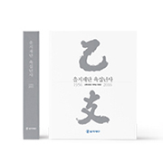
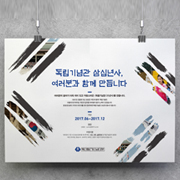
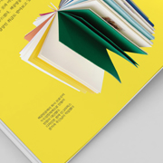

#portfolio.on{| }
#portfolio.on{|}
#portfolio
.responsiveWeb{
웅진코웨이 리뉴얼
}
- 2019. 06 (2 weeks)
- html5 | css3 | javascript | jquery
- markup test passed | web design && coding == 100%
- 1280px1024px768px640px375px
-
- goal.
- ‘Care’라는 키워드를 가지고 감성적인 컨셉으로 접근한 기존 디자인에서 코웨이의 제품과 IoCare를 부각시켜 메인페이지에서 전달하는 정보의 양을 늘리고, 맑고 깨끗한 이미지를 부각시키고자 함.
-
- what I did.
- 탭 배너의 사용으로 정보의 양을 늘리면서 레이아웃은 깔끔하게 유지될 수 있도록하고 5단계에 걸친 반응형 작업으로 기업 페이지의 접근성과 효율성을 높임.
#portfolio
.web{
넥슨컴퓨터박물관 리뉴얼
}
- 2019. 04-05 (3 weeks)
- html5 | css3 | javascript | jquery
- markup test passed
- web design && coding == 100%
-
- goal.
- 다소 단조롭고 평이한 레이아웃과 디자인을 탈피하고 아시아 최초의 컴퓨터 박물관인 넥슨컴퓨터박물관의 개성이 뚜렷하게 보이는 방향으로 리뉴얼.
-
- what I did.
- 컴퓨터 블루스크린에서 착안해 대표컬러를 선정하고, 픽셀폰트를 활용해 디지털적인 디자인 요소를 부각시킴. 동적인 CSS와 jquery를 적극 구현해 페이지마다 흥미를 유도함.
#portfolio
.web{
한국토지주택공사 리뉴얼
}
- 2019. 04-05 (3 weeks)
- html5 | css3 | javascript | jquery
- markup test passed
- web design && coding == 100%
-
- goal.
- 메인과 서브의 경계가 모호하고 중복된 메뉴가 많은 기존의 페이지에서 탈피해, 메인과 서브를 명확히하는 방향으로 정보를 정리해 사용자의 정보 수집을 보다 용이하게 리뉴얼.
-
- what I did.
- 내용의 그룹화를 통해 페이지의 정보전달력을 향상시킴. 관공서 페이지의 사용성을 고려해 ie7 이상에 맞춰 크로스브라우징하고, 웹접근성 표준 가이드에 기준해 마크업 작성.
#portfolio
.mobile{
이천세계도자축제 리뉴얼
}
- 2019. 05 (2 weeks)
- html5 | css3 | javascript | jquery
- size : 360px | markup test passed
- mobile design && coding == 100%
-
- goal.
- 축제 참가자들에게 정보를 제공하는 메뉴 순으로 내용 재배치. 다소 통일성이 부족한 디자인에서 탈피해 명확한 색 대비와 축제 특성에 맞고 깔끔한 레이아웃으로 정보 전달력 향상을 목표로 함.
-
- what I did.
- 360px 사이즈 기준으로 작업. 메인 이미지에서 컬러를 추출해 통일감있는 색체를 구성하고, 정보제공메뉴를 최상단에 위치. 중복 메뉴를 통합해 정보의 혼란을 줄이고, 정보 전달력을 향상시킴.
#portfolio
.aboutMe {
- name: 황온슬
- birth: 1990.12.13 +
- email: ronica90@gmail.com
- education 웹퍼블리셔&프론트엔드 전문가양성과정 수료(700h)
- 웹퍼블리셔&프론트엔드 전문가양성과정 수료(700h, 그린컴퓨터아카데미 강남) 2019.03-07
- 가천대학교 영여영문학과 졸업 2009.02-2014.02
- experience 편집디자인 경력 3년
- (주)헥사인 2018.04-2018.10(6개월)
- (주)사사연 2015.06-2017.11(2년 6개월)
- 

- 
- 
- skill
-
html4 & html5
하드코딩 가능. 마크업표준 준수. 크로스브라우징 이슈에 따른 대처 가능.
-
css1,2 & css3
각 버전에 맞는 style 적용 가능. ie7 이상 크로스브라우징 가능.
-
javascript & jquery
다양한 script 문법을 활용해 배너 등 페이지 내 동작 구현 가능.
jquery 문법에 준해 페이지 내에서 발생하는 이벤트 등 동작 구현 가능. - photoshop & illustrator 사진보정&편집, 도형제작 등 디자인에 필요한 요소 제작&수정 가능.
-
html4 & html5
하드코딩 가능. 마크업표준 준수. 크로스브라우징 이슈에 따른 대처 가능.
- license
- 컴퓨터그래픽스운용기능사 2011.10
- GTQ 1급 2013.06